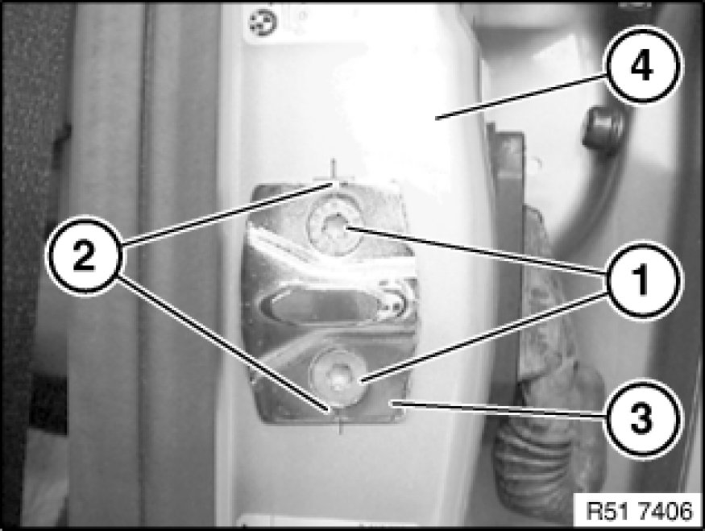

Front Door Striker: Service and Repair
51 21 003 - Replacing door detent (lock striker), front left or right

Release screws (1) and remove door detent (3).
Installation:
Basic adjustment via crosswire on B-pillar (4) and notches (2) on door detent (3).
Tightening torque 51 21 3AZ 51 21 Front Door Locks.
Adjust door detent Adjustments.